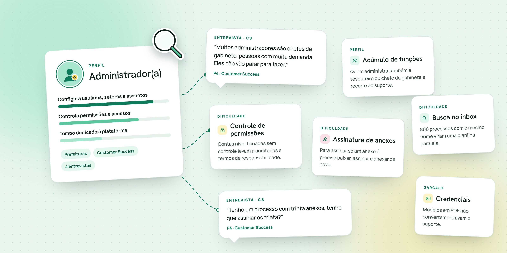
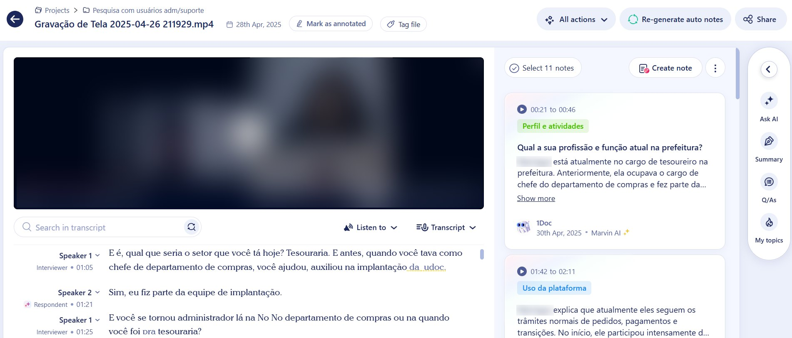

Equipe dedicada
Prefeituras maiores, como Araraquara, têm um departamento só para gerir a plataforma, com mais controle e processos próprios.
Case 05 · 1Doc
Uma pesquisa qualitativa com administradores de prefeituras e com o time de Customer Success para entender quem administra a 1Doc, como trabalha e onde a plataforma ainda trava o dia a dia.

Identificar os diferentes perfis de usuários administradores da 1Doc, entender seus comportamentos no dia a dia e mapear os principais desafios, oportunidades e sugestões de melhoria no uso da plataforma.
Entrevistamos administradores de prefeituras e uma analista de Customer Success (CS) da 1Doc, para cruzar a experiência direta de quem usa com as demandas que chegam com frequência ao time de relacionamento.
Servidor de carreira, diretor da unidade de serviços gerais da Secretaria de Administração. Também atua com gestão documental e atendimento ao cidadão.
Chefe de subdivisão de TI, responsável pela administração da 1Doc e pela tramitação de processos digitais.
Ex-chefe do departamento de compras e atual tesoureiro, atuando na gestão financeira.
Formada em Direito, com MBA em Gestão e Engenharia de Processos. Faz parte do time de Customer Success.
As entrevistas foram realizadas por videoconferência, seguindo um roteiro semiestruturado. As perguntas guiavam a conversa, mas deixavam espaço para os participantes trazerem situações reais do dia a dia.
As gravações foram organizadas no Marvin, ferramenta de repositório de pesquisa que transcreve os vídeos e apoia a análise. Com ele, consegui:

As falas foram agrupadas em cinco tags, que estruturaram a síntese e as próximas seções deste case:
Os administradores configuram usuários, setores e assuntos, além de módulos específicos como protocolos, emissão de documentos e organogramas. Mas o perfil muda bastante de uma prefeitura para outra. Com base nas conversas com os ADMs, conseguimos identificar os seguintes perfis:
Prefeituras maiores, como Araraquara, têm um departamento só para gerir a plataforma, com mais controle e processos próprios.
O administrador também é chefe de gabinete, subsecretário ou tesoureiro. Com pouco tempo, recorre mais ao suporte.
Em Americana, usuários nível 1 gerenciam seus próprios setores e o administrador apoia na inclusão de usuários e nas orientações.
“Muitos administradores são chefes de gabinete, subsecretários, pessoas com muita demanda. Eles não vão parar para fazer. Vão ao suporte, o suporte diz que é o administrador que faz, e aí muitos vêm até a gente e pedem.”P4 · Customer Success
“A gente deixou o serviço mais descentralizado, para que cada gestor faça da sua área, e o geralzão nós fazemos. Uns sessenta, setenta por cento a gente faz aqui; o restante os demais fazem.”P1 · Americana
Onde a gestão de usuários é centralizada, há mais preocupação com permissões, principalmente as de nível 1. A plataforma cobra por usuário ativo, e contas podem ser criadas para quem não deveria acessar certos módulos. Isso leva a auditorias periódicas e processos próprios de controle.
“A gente poderia ter um intermediário entre o nível um e o nível dois. Mandamos um termo de responsabilidade, considerando a LGPD, para os servidores assinarem. Com o nível um podendo criar usuário, já aconteceu de criarem sem a gente ter controle.”P2 · Araraquara
Hoje só é possível assinar todos os anexos de um processo de uma vez. Para assinar apenas um, a pessoa precisa encontrar o arquivo, baixar, assinar e anexar de novo.
“Prefeituras grandes me perguntam: tenho um processo com trinta anexos, tenho que assinar os trinta?”P4 · Customer Success
Usuários externos não conseguem buscar pelo número do processo nem pelo nome do requerente. No inbox aparece só o nome do próprio usuário, o que complica quem acompanha muitas demandas.
“Um engenheiro responsável técnico tem oitocentos processos no inbox, todos com o nome dele. A maioria faz uma planilha de Excel paralela para saber que o protocolo 50 é de um requerente e o 51 é de outro.”P1 · Americana
Clientes pedem com frequência carteirinhas e credenciais que ainda não têm modelo na plataforma. Muitos enviam o modelo em PDF, que não converte bem para DOCX, e a configuração vira um gargalo para o suporte.
“Se a gente pega aquele PDF e converte para Word, ele distorce e a gente não consegue configurar. Se tivéssemos um modelo nosso, padrão, tenho certeza de que eles acatariam.”P4 · Customer Success
O recurso de Etapas não permite alterar uma etapa sem remover todos os processos vinculados a ela. No setor público, trocas de secretários e reorganizações mudam os fluxos com frequência, e a prefeitura acabou deixando de usar o recurso.
“Nada é estático. Trocou o secretário, ele quer mudar um monte de coisa. Se você tiver que alterar a etapa, tem que tirar tudo que está lá dentro.”P1 · Americana
Muitos clientes não entendem a diferença entre “arquivar” e “arquivar e parar de acompanhar”, o que distorce as métricas de eficiência dos dashboards.
“Em todos os treinamentos que eu presencio, isso gera dúvida.”P4 · Customer Success
Os relatórios ainda divergem dos números reais, e métricas como a inatividade de usuários geram dúvida sobre o parâmetro usado. Em prefeituras com equipes pequenas, a ferramenta acaba pouco usada.
“Se tiro um relatório na busca avançada, dá quinhentos registros; no analítico dá trezentos, quatrocentos. Começou em dez, chegou em noventa, mas não está em cem.”P1 · Americana
A nova versão facilita a extração de campos, que costumam ir para planilhas e gráficos. Por ser recente, ainda não havia uma opinião consolidada sobre ela.
Falta o número do processo na tela inicial, as nomenclaturas não deixam claro qual ação foi feita e buscas com mais de duas mil linhas não podem ser exportadas.
“Os termos técnicos que tem lá, eu não conheço todos. Tenho que abrir um chamado para perguntar.”P2 · Araraquara
A 1Doc cumpre um papel essencial na digitalização e na gestão documental dos órgãos públicos, mas ainda há desafios importantes para quem a administra. Os perfis variam de equipes inteiras dedicadas à ferramenta até profissionais que acumulam várias funções.
Quem centraliza a gestão pede mais controle sobre permissões. Quem descentraliza precisa de usabilidade que dê autonomia aos usuários dos setores.
A pesquisa foi realizada em abril de 2025. Desde então, ela vem servindo de base para o roadmap: parte das oportunidades já virou entrega, e o restante segue mapeado no backlog.
Melhorias na busca e nos filtros para encontrar demandas com mais rapidez.
Tratamento dos documentos rejeitados dentro da árvore de documentos do processo.
Seguem documentadas e aguardando priorização junto ao time de produto. Alguns pedidos, como a edição da emissão, são mais complexos, porque o setor público exige transparência e idoneidade dos documentos.